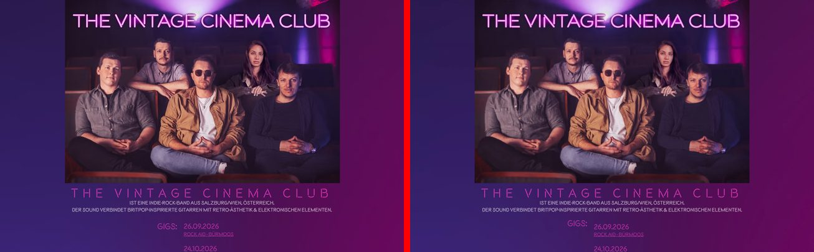
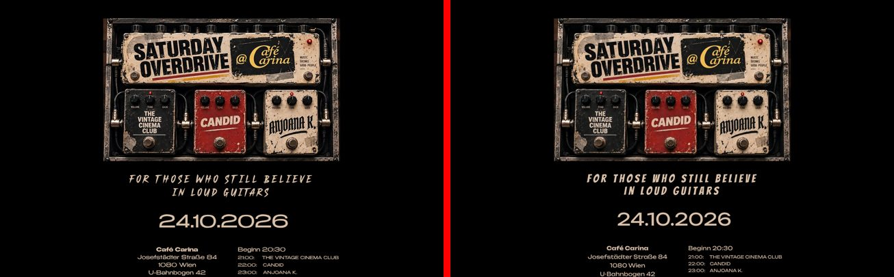
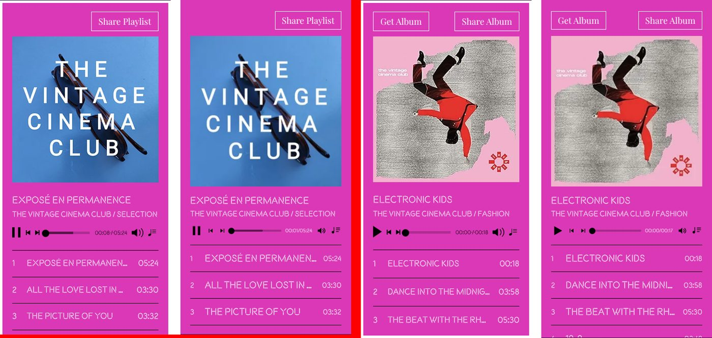
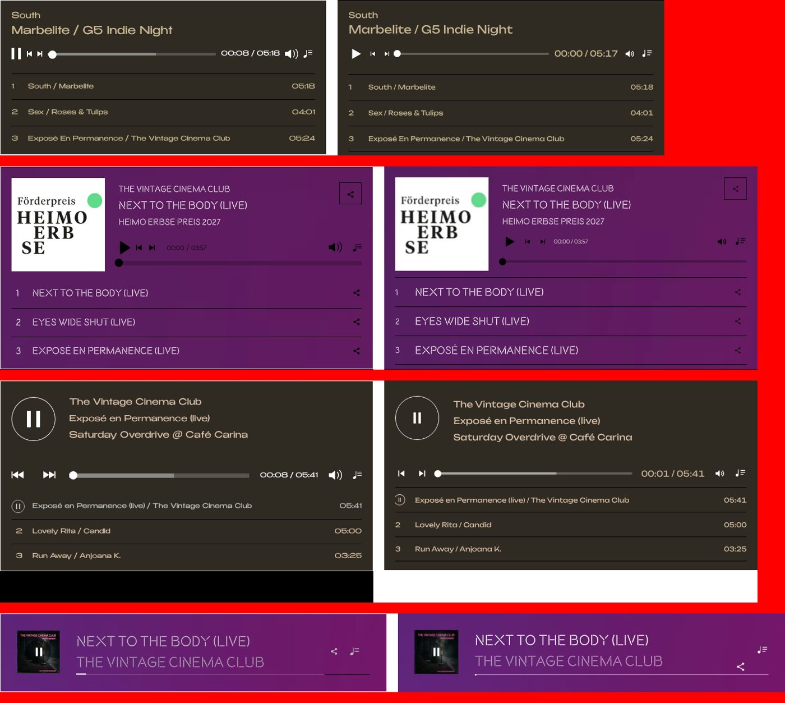
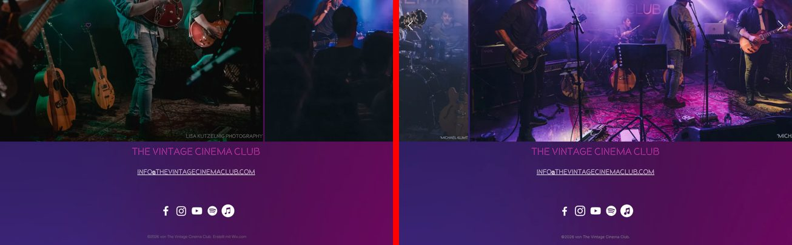
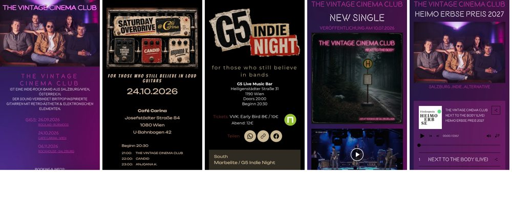

Project report
Rebuild of www.thevintagecinemaclub.com from Wix to a static Astro site, removal of all Wix components and assets, and optimisation for search engines and AI answer engines.
| Website | https://www.thevintagecinemaclub.com |
| Framework | Astro 5.18, static output |
| Date | 12 November 2026 |
| Project location | Git repository thevintagecinemaclub with full change history |
/llms.txt, consistent entity data across meta tags, structured data and page text, and a robots.txt that does not block AI crawlers.The site ran on Wix. Wix renders pages with its own runtime, loads assets from Wix hosts and stores widget content in Wix apps. Seven pages existed:
| URL | Content | Wix setting |
|---|---|---|
/ | Band photo, intro, gigs, release promo, YouTube video, biography, 2 music players, vinyl offer, video gallery, photo slider, footer | indexed |
/saturdayoverdrive | Event page Saturday Overdrive @ Café Carina, 24.10.2026 | indexed |
/g5-indie-night | Event page G5 Indie Night with ntry.at ticket widget | indexed |
/nttb | Release page of the single „Next to the Body“ Live | noindex |
/presskit | Presskit ZIP download | noindex |
/heimo-erbse-2027 | Submission for the Heimo Erbse Preis 2027 | noindex |
/fullscreen-page | Empty Wix system page used by the gallery | indexed, no content |
The Wix sitemap listed only /, /saturdayoverdrive and /g5-indie-night. The other pages were found in the Wix page routing data embedded in the HTML. /blank is the internal Wix URI of the home page.
The cloud environment blocked the website and its asset hosts. The following hosts were added to the environment's network allow list: www.thevintagecinemaclub.com, thevintagecinemaclub.com, static.wixstatic.com, video.wixstatic.com, music.wixstatic.com, static.parastorage.com, siteassets.parastorage.com, viewer-assets.parastorage.com, viewer-apps.parastorage.com, progallery.wixapps.net, tpa.wixapps.net, www-thevintagecinemaclub-com.filesusr.com, 21415aa7-8cff-44a6-ae32-790778b1c63e.filesusr.com, repackager.wixmp.com and gcp-repackager.wixmp.com. These entries are no longer needed and can be removed from the environment settings.
GkgvDeJ73cY with autoplay, loop and controls.| Wix widget | How the content was obtained | Result |
|---|---|---|
| Wix Music, 6 instances | The widget HTML embeds its data base64-encoded. Decoding it returned album, tracks, durations, audio file names, covers and all style settings. | 6 albums or playlists, 25 track entries, 24 unique MP3 files at 128 kbit/s, layout and color settings per player |
| Wix Video channel | Direct MP4 files were access-protected. Starting playback in the browser returned tokenised HLS stream URLs, which were downloaded segment by segment and remuxed. | 3 videos in 1080p, poster images, durations and upload dates |
Wix Video box on /nttb | Direct MP4 file | 1 video, 237 s |
| Wix Pro Gallery | Gallery settings from the page data | 25 photos, slider layout, 6 px spacing, autoplay every 4 s, loop, click opens fullscreen |
HTML embed on /g5-indie-night | The embedded file contains a single script from ntry.at | ntry.at ticket widget |
/files/TVCC_Presskit_2026.zip./<page>/index.html, which works on every host without server configuration.srcset. Example: the 7.3 MB cover PNG on the Heimo Erbse page is delivered as 23 kB WebP at display size, the 2.1 MB release promo PNG as 63 kB.

Wix widgets depend on Wix servers and the Wix runtime. Each one was rebuilt as an Astro component with a small amount of client-side JavaScript. No external library is loaded at runtime.
| Wix component | Astro replacement | Functions |
|---|---|---|
| Wix Music player | MusicPlayer.astro with 4 layouts matching the 4 Wix layouts used on the site | Play, pause, previous, next, seek by click, drag and arrow keys, mute, playlist toggle, track selection, share menu, Get Album link, one player at a time, autoplay attempt as configured in Wix |
| Wix Video channel | VideoGallery.astro | Poster with play button, thumbnail strip, next video on end, share menu, info overlay |
| Wix Pro Gallery slider | LiveGallery.astro | Autoplay every 4 s with loop, arrows, swipe, pause on hover, fullscreen viewer with keyboard and swipe navigation |
| Wix Video box | VideoBox.astro | Poster frame, play button, native controls |
| Wix share buttons | ShareButtons.astro | WhatsApp, copy link, Facebook |
| Wix social bar | IconRow.astro and SocialIcon.astro | Links to Spotify, Apple Music, YouTube, Facebook, Instagram |
| Wix video player for YouTube | YouTube embed via youtube-nocookie.com | Same video, autoplay muted, loop, controls |
| Wix HTML embed | iframe with the ntry.at script | Ticket shop |
| Wix mobile back-to-top button | Part of Base.astro | Appears after 400 px scroll on mobile |
The gallery "like" counter of Wix stores its data on Wix servers and was not rebuilt.


After the rebuild the site no longer loaded anything from Wix, but it still contained files and texts that originate from Wix. These were replaced because they either belong to Wix, are licensed for Wix sites only, or carry no meaning outside Wix.
| Item | Reason for change | Change |
|---|---|---|
| Social media icons | The 11 icon PNG files were Wix clip-art from the Wix media library. | Replaced by inline SVG icons generated at build time from the simple-icons package, licence CC0. Colors, shapes and sizes match the original icons. |
| Font Benzin | Font from the Wix font library, licensed for use on Wix sites. | Replaced by Unbounded 400 and 700, SIL Open Font License. |
| Font Midnight Terror | Font from the Wix font library. | Replaced by Bangers, SIL Open Font License. |
| Font Helvetica Light | Font file served by Wix. | Replaced by the system font stack Helvetica Neue, Helvetica, Arial. Used only for the copyright line and the video button. |
| Footer text "Erstellt mit Wix.com" | No longer true. | Removed. The line now reads "©2026 von The Vintage Cinema Club." |
| Favicon | Wix served its own logo as favicon. | Replaced by an SVG monogram "TVCC" in the brand colors. |
/fullscreen-page | Empty Wix system page for the gallery fullscreen view. | Removed. The URL redirects to /. |
/blank | Internal Wix URI of the home page. | Redirects to /. |
| Media file names | All images and audio files had Wix media IDs as names, for example 149dd1_53ecf591….jpg. | Renamed to descriptive names, for example tvcc-bandfoto-2026.jpg and fashion-04-19-9.mp3. |
The fonts Montserrat, Anton and Playfair Display are Google Fonts under the SIL Open Font License and were kept. The display font of the band was uploaded to Wix by the band and was kept. Licence texts of the new fonts are stored in docs/font-licenses/.
Result: a case-insensitive search for "wix", "parastorage", "wixstatic" and "filesusr" in all HTML, CSS, JavaScript, text and XML files of the build output returns no match.

| Finding | Effect |
|---|---|
| Home page had 4 H1 headings; body text was marked up as H6. | Search engines cannot identify the main topic and section structure. |
| 5 of 6 subpages had no H1. | Missing primary topic signal. |
| 6 of 7 pages had no meta description. | Search engines generate snippets from random page text. |
/presskit used the title of /nttb. | Duplicate title, wrong page description in results and shares. |
28 of 45 images on the home page had empty alt texts, file names or Wix label keys such as alt.text.label.Facebook as alt text. | No image search relevance, poor accessibility. |
Structured data declared the band as LocalBusiness. | Wrong entity type; no data about music, members or releases. |
No twitter:image, no image size or alt text in Open Graph, no og:locale. | Incomplete social previews. |
Canonical URLs without trailing slash while pages are served at /<page>/. | Canonical would point to a redirecting URL. |
| Event pages are not linked from any page. | Crawlers find them only through the sitemap. |
| Area | Change | Reason |
|---|---|---|
| Headings | One H1 per page, H2 and H3 for sections, body text as paragraphs. Heading sizes come from CSS classes, so the visual design did not change. On the event pages and on /nttb the H1 contains the same text that the poster image shows, hidden visually. | Clear topic and document structure for search engines, AI systems and screen readers. |
| Titles | Event pages now include venue, city and date; presskit has its own title. See 6.3. | Unique, descriptive titles improve relevance and click-through. |
| Meta descriptions | Added to every page, built only from text that appears on the page. | Controlled search snippets and social previews. |
| Robots meta | Indexable pages: index, follow, max-image-preview:large, max-snippet:-1, max-video-preview:-1. Hidden pages: noindex, follow. | Allows large image and video previews; hidden pages still pass link signals. |
| Canonical | Absolute URL with trailing slash, matching the served URL. None on the 404 page. | Avoids canonicalising to redirecting URLs. |
| Open Graph and Twitter | Type, site name, locale de_AT, title, description, URL, image with width, height and alt text, Twitter image and alt. | Complete previews on Facebook, WhatsApp, Instagram, X and messaging apps. Locale de-at is the setting of the original Wix site. |
| Image alt texts | Every content image describes what it shows, for example "The Vintage Cinema Club – Bandfoto 2026: die fünf Bandmitglieder in einem Kinosaal". The release promo image contains all text printed on it. | Image search relevance and accessibility; text inside images becomes readable for crawlers. |
| Image file names | Descriptive names, which also become the names of the generated WebP files. | File names are a ranking signal in image search. |
| Dates | Gig dates, release date and recording date are marked up with <time datetime>. | Machine-readable dates. |
| Sitemap | Generated by @astrojs/sitemap on every build; contains the 3 indexable pages only. | Stays correct when pages are added or their indexing changes. |
| robots.txt | Allows all crawlers and references the sitemap. | Crawlers must be allowed to read pages to see their noindex tags. |
| Redirects | /blank and /fullscreen-page redirect to /; .htaccess sends HTTP 301 on Apache. | Keeps legacy URLs working and passes their signals to the home page. |
| 404 page | Own error page with link to the home page, noindex. | Visitors and crawlers get a valid error response. |
| Semantic HTML | Sections with labels, footer outside the main content, link names that match visible text. | Better structure for parsing. |
| Page | Title before | Title after |
|---|---|---|
/ | The Vintage Cinema Club | Indie-Rock-Band aus Salzburg, Österreich | unchanged |
/saturdayoverdrive | Saturday Overdrive at Cafe Carina | Saturday Overdrive @ Café Carina Wien – 24.10.2026 |
/g5-indie-night | G5 Indie Night | G5 Indie Night – G5 Live Music Bar Wien |
/nttb | The Vintage Cinema Club - Next to the Body (Live) | Next to the Body (Live) – neue Single | The Vintage Cinema Club |
/presskit | The Vintage Cinema Club - Next to the Body (Live) | Presskit | The Vintage Cinema Club |
/heimo-erbse-2027 | Heimo Erbse Preis 2027 | The Vintage Cinema Club | unchanged |
The home page description of the original site was kept. All other pages received a description of 115–180 characters, for example for /saturdayoverdrive: "Saturday Overdrive im Café Carina, Josefstädter Straße 84 / U-Bahnbogen 42, 1080 Wien – 24.10.2026, Beginn 20:30: The Vintage Cinema Club, Candid und Anjoana K. live."
All structured data is generated in src/lib/schema.ts. Every value is taken from the site content or from the data of the original Wix site.
| Type | Page | Content | Source |
|---|---|---|---|
| WebSite | / | Name, URL, language, publisher | Site |
| MusicGroup | / | Name, short name TVCC, description, genres Indie-Rock, Britpop and Alternative, locations Salzburg and Wien, e-mail, 5 members, band photo, profiles on Spotify, Apple Music, YouTube, Facebook and Instagram | Home intro text, Heimo Erbse page "Indie/Alternative-Band", member names from the event pages, social links |
| MusicAlbum „Fashion“ | / | Debut album, cover, 10 tracks with durations, vinyl offer 25 EUR | Music player data, biography, vinyl section |
| MusicAlbum „Next to the Body“ | / | Single release, publication date 2026-07-10, recording note, cover, track with duration | /nttb page text, player data |
| ItemList of VideoObject | / | 3 videos with name, thumbnail, upload date, duration and file URL | Video metadata of the original Wix site |
| BreadcrumbList | all subpages | Home → page | Site structure |
The previous LocalBusiness markup was removed because a band is not a local business.
Generative engine optimisation targets AI assistants and answer engines that summarise web content. They rely on crawlable text, consistent entity facts and machine-readable data.
| Measure | Implementation | Reason |
|---|---|---|
/llms.txt | Generated at build time from the same data as the pages: band description, genres, origin, members, contact, both releases with tracklist and release date, indexable pages with venue and time data, profile links. Hidden pages are not listed. | Proposed convention from llmstxt.org that gives AI systems a compact, factual summary. It cannot drift from the page content because both use the same source data. |
| Consistent entity facts | The band description is identical in the page text, meta description, structured data and llms.txt. | Identical facts across all sources prevent contradicting statements in AI-generated answers. |
| Entity linking | sameAs links to Spotify, Apple Music, YouTube, Facebook and Instagram. | Connects the website to the band's profiles as one entity. |
| Crawler access | robots.txt allows all user agents, including AI crawlers. | Content can be read and cited. |
| Content in HTML | Tracklists, durations, gig dates, venues and band texts are in the HTML, not only in widgets or images. Text printed in images is repeated in alt texts. | Many AI crawlers do not execute JavaScript and none read text inside images. On Wix the tracklists were inside third-party iframes loaded by JavaScript. |
| Clear headings and dates | One H1, section headings, <time> elements. | Easier extraction of facts and their context. |
| Measure | Reason |
|---|---|
Responsive WebP images with srcset, lazy loading below the fold | Smaller downloads, especially on mobile. |
| Largest image of each page preloaded with high fetch priority | Faster Largest Contentful Paint. |
| Fixed width and height on all images | No layout shift; CLS 0–0.013. |
Self-hosted fonts with font-display: swap, display font preloaded | No third-party font requests, text visible immediately. |
| Audio and video load only on demand | MP3 and MP4 files are not downloaded on page load. |
| Accessible names that match visible text, labelled buttons, 44 px tap targets for slider arrows and 32 px for share buttons | Screen reader and touch usability. |
Lighthouse 12, mobile emulation, local build:
| Page | Performance | Accessibility | Best Practices | SEO | LCP | CLS |
|---|---|---|---|---|---|---|
/ | 93 | 96 | 100 | 100 | 3.2 s | 0 |
/saturdayoverdrive | 99 | 100 | 100 | 100 | 2.0 s | 0.013 |
/g5-indie-night | 99 | 96 | 96 | 100 | 1.8 s | 0.007 |
/nttb | 99 | 100 | 100 | 69 | 2.2 s | 0 |
/heimo-erbse-2027 | 100 | 100 | 100 | 69 | 1.6 s | 0 |
/presskit | 100 | 100 | 100 | 66 | 0.9 s | 0 |
/nttb, /heimo-erbse-2027 and /presskit is caused only by the noindex setting, which is intended./ and /g5-indie-night: the brand colors do not reach the WCAG contrast ratio of 4.5:1. White on pink in the music players has 3.99:1, the dark red labels on G5 Indie Night have 2.35:1. The colors were kept to preserve the design./g5-indie-night: the test environment blocked ntry.at, which produced a console error. On a public host the ticket widget loads normally.| Question | Decision | Implementation |
|---|---|---|
| Fonts from the Wix font library | Replace with free fonts | Unbounded, Bangers and system Helvetica/Arial, see section 5 |
Indexing of /nttb, /presskit, /heimo-erbse-2027 | Keep hidden as on Wix; document how to change it | noindex kept; excluded from sitemap and llms.txt; instructions below |
| Event structured data | Do not add now; list as recommendation | No MusicEvent markup; see section 12 |
| Internal links to the event pages | Do not add; list as recommendation | No link changes; see section 12 |
noindex attribute from the <Base> call at the top of the page file, for example src/pages/nttb.astro.NOINDEX_PATHS in astro.config.mjs. The page then appears in the sitemap on the next build.src/pages/llms.txt.ts.npm run build and upload dist/.| Check | Result |
|---|---|
| Visual comparison with the original at 1440 px, viewport by viewport, for all pages | Layout, typography, colors and images match; page heights within 8 px |
| Automated browser tests: audio playback, track change, seek, mute, playlist toggle, share menu, single active player, video gallery, slider arrows and autoplay, fullscreen viewer, video box, event page players, copy link, presskit download, legacy redirect, 404 | 29 of 29 passed |
| Horizontal overflow at 390 px on all pages | none |
| Local references in all generated files | no missing file |
| Absolute URLs in canonical, Open Graph and structured data | all resolve to existing files |
| References to Wix hosts or Wix strings in the build output | none |
| Structured data syntax | valid JSON-LD on all pages |

| Path | Content |
|---|---|
src/pages/ | One file per page, llms.txt.ts, 404 page |
src/layouts/Base.astro | Head with all SEO tags, background modes, back-to-top button |
src/components/ | Music player, video gallery, photo slider, video box, share buttons, social icons, band block, image component |
src/data/music.json | Albums, tracks, durations, audio files |
src/lib/site.ts, schema.ts | Links, e-mail addresses, structured data builders |
src/assets/media/ | 48 source images, optimised at build time |
public/ | Audio, video, fonts, presskit, robots.txt, .htaccess, favicon |
docs/ | This report, font licences |
Commands: npm install, npm run dev for local development, npm run build to create dist/. The content of dist/, 328 MB including media, is uploaded to the web root of any host. On Apache, .htaccess adds 301 redirects, the 404 page and caching headers; other hosts serve 404.html automatically.
/nttb are redirected to /nttb/ by the server./sitemap-index.xml, check indexing and the legacy redirects.MusicEvent structured data for upcoming gigs with date, start time, venue address and ticket offers. The G5 Indie Night page has no date on the page; it is needed for this markup./nttb indexable. It is the only page with release-specific content for „Next to the Body“.sameAs. Search engines and AI systems use these databases to identify music entities.hreflang if the band targets audiences outside German-speaking countries.npm audit reports vulnerabilities in build tools: Astro, sharp, esbuild and zod. They affect the build environment only, not the published static files.__MACOSX entries from the presskit ZIP.